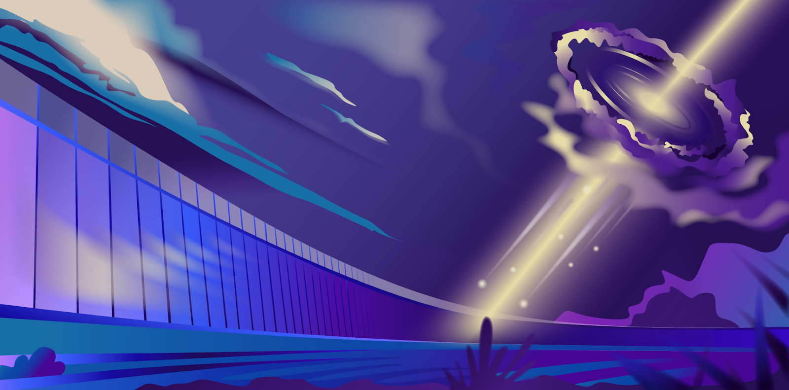
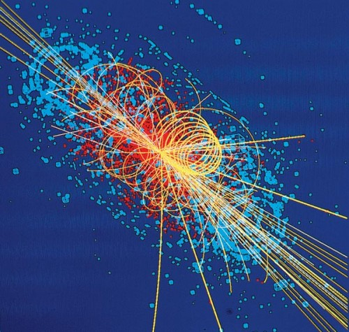
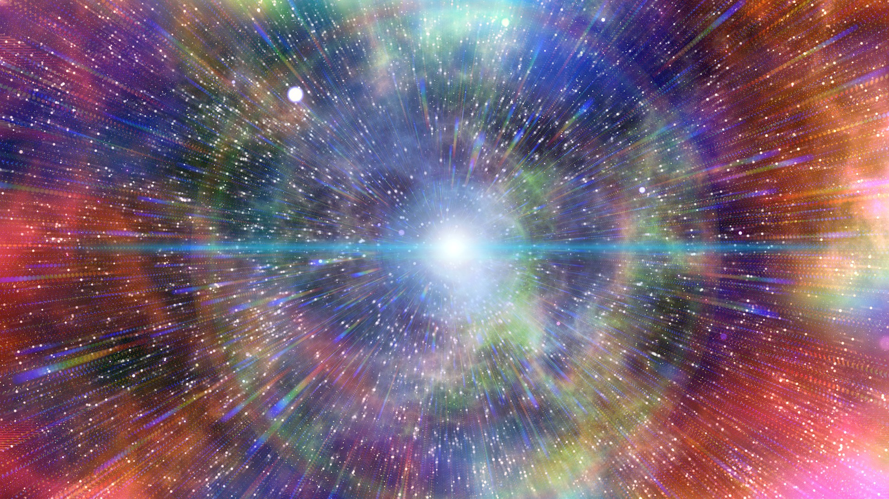
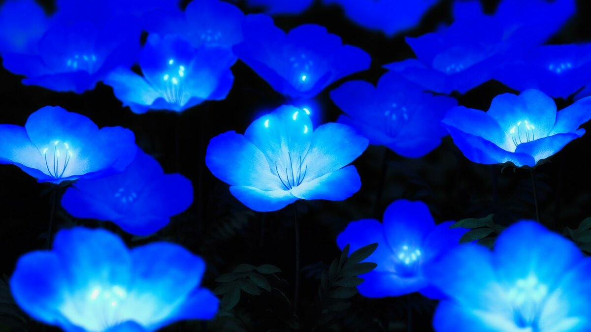
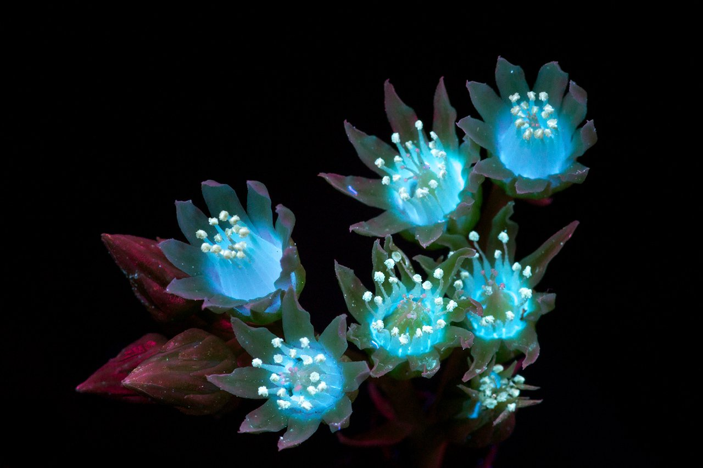
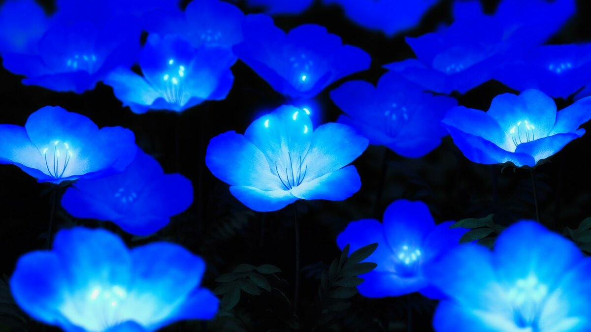
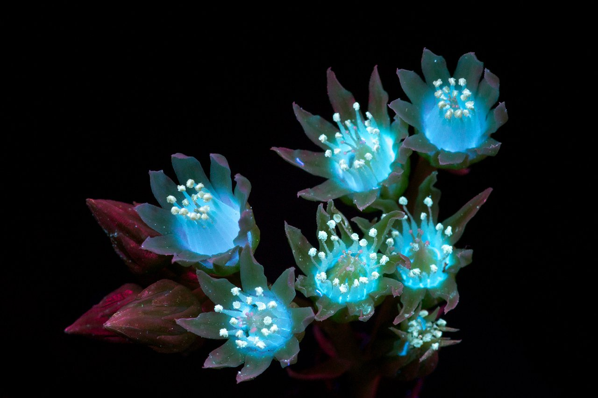
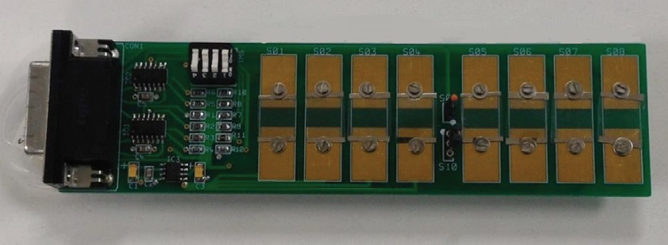
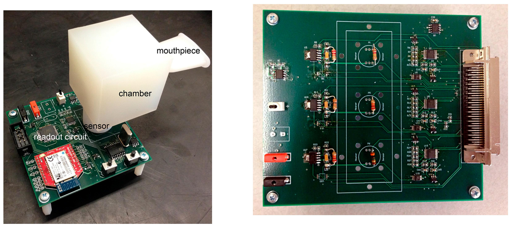
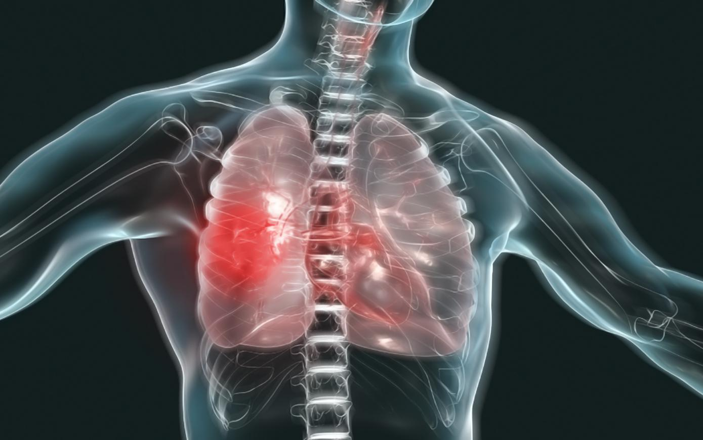

Мир новых технологий

Мир новых технологий
В этом году несомненным и главным научным итогом года стали разработки в области борьбы с коронавирусом. Но, несмотря на важность этих исследований, не стоит забывать о не менее интересных работах ученых из других научных областей. Экспертные советы Российского научного фонда выбрали 10 наиболее ярких научных результатов года, полученных при поддержке РНФ. Эти результаты были опубликованы порталами Russia Today и Indicator.ru.
Российские ученые подошли к разгадке проблемы, которая в последние годы занимает умы физиков всего мира. Исследовательская группа, которая изучает ядра активных галактик, неожиданно обнаружила, что именно в них рождаются нейтрино высоких энергий – частицы, нарушающие почти все физические законы и позволяющие ответить на ключевые вопросы об устройстве Вселенной.
Нейтрино разных энергий приходят к нам из космоса. Частицы практически ни с чем не взаимодействуют и могут пролететь что угодно и кого угодно насквозь, облетая всю Вселенную. Благодаря этому нейтрино доносят до нас информацию о том объекте, который их породил и испустил. Так, с помощью солнечных нейтрино ученые убедились в том, что в центре Солнца происходят термоядерные реакции. Нейтрино же высоких энергий порождаются только очень быстрыми протонами. То есть нейтрино высоких энергий, которые астрофизики регистрируют на Земле, приносят нам информацию о «космических супер-коллайдерах», ускорителях частиц, в то время как на Земле люди тратят миллиарды денежных знаков, чтобы построить Большой адронный коллайдер и другие мощные ускорители и лучше изучить Вселенную.
  В фильме «Аватар» Джеймса Кэмерона изображен фантастический мир с пышной растительностью и завораживающими светящимися джунглями. Но то, что еще недавно казалось фантастикой – светящиеся растения, теперь становится реальностью благодаря современным достижениям в области генетики и биохимии. Международная команда ученых создала растения, свечение которых видно невооруженным глазом. Они в десять раз ярче предшественников. В скором времени светящиеся в темноте декоративные комнатные растения планируется вывести на рынок.
В растениях кофейная кислота – строительный блок лигнина, ответственный за механическую прочность клеточных стенок, то есть часть биомассы растений. Помимо этого, кофейная кислота также необходима для синтеза пигментов, летучих соединений и антиоксидантов. Таким образом, свечение и обмен веществ растений тесно связаны, и потому свечение может отражать физиологический статус растений и их реакцию на окружающую среду.
 



Ученые создали компактную сенсорную систему, которая может анализировать выдыхаемый воздух и выявлять болезни дыхательных путей и органов. В экспериментах система с высокой точностью определила больных с хронической обструктивной болезнью легких (ХОБЛ) — воспалительным заболеванием дыхательных путей, которое повышает риск осложнений при заражении COVID-19. Сейчас исследователи оптимизируют разработку, чтобы сделать ее более функциональной и расширить круг детектируемых веществ.
В исследовании эффективности новой системы участвовали 12 больных с ХОБЛ и 9 здоровых людей в соответствии с правилами клинических испытаний. Система обнаружила всех людей с хронической болезнью легких, уловив у них повышенную концентрацию выдыхаемого диоксида азота. Содержание газа составляет менее одной молекулы на миллион молекул выдыхаемого воздуха, что говорит о высокой чувствительности разработанных сенсоров.
  